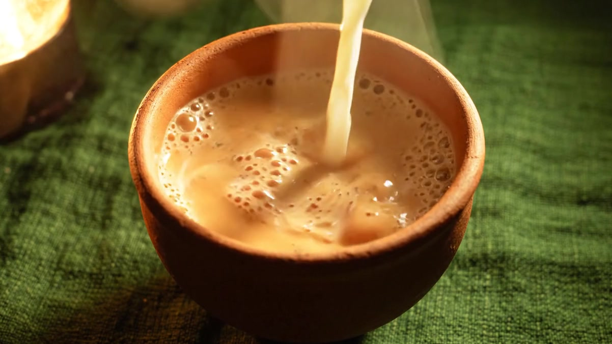
CHAAYA
छायाChai from the shade of a Lucknow neem tree. Scroll to steep.
Spice is ground the morning it is brewed.
Green cardamom from Idukki, ginger from Kochi, pepper from the Malabar coast. Nothing sits in a jar long enough to lose its voice.
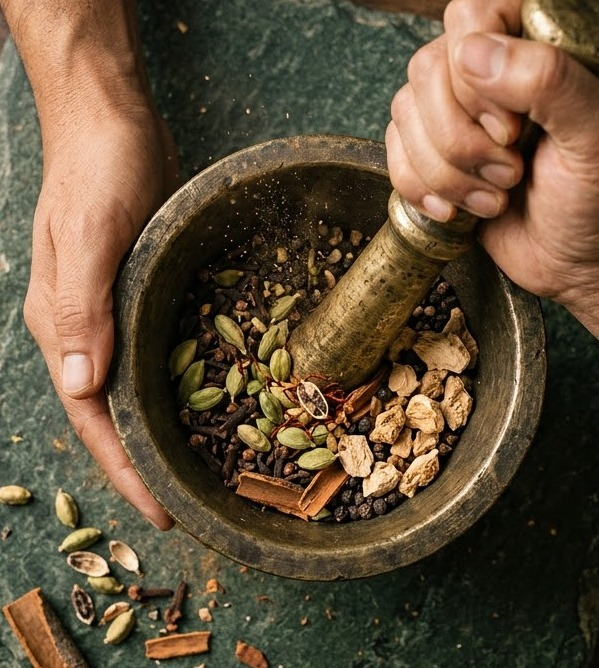
“We stopped selling pre-ground masala in 2019. You can taste the difference in the first sip.”
Six blends, one ritual
Shop all blends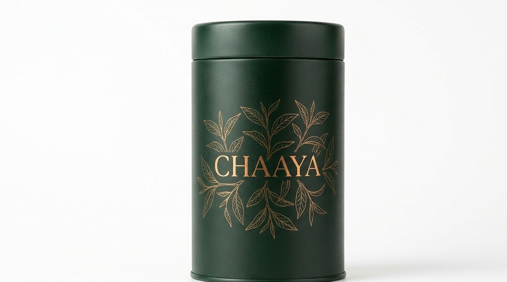
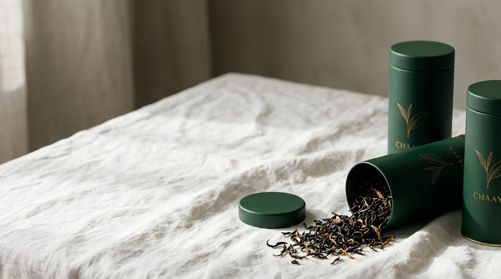
Kadak Masala
₹ 780100 gAssam CTC, green cardamom, Kochi ginger, pepper
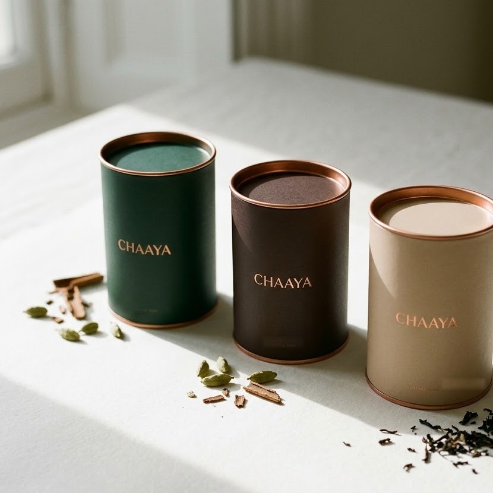
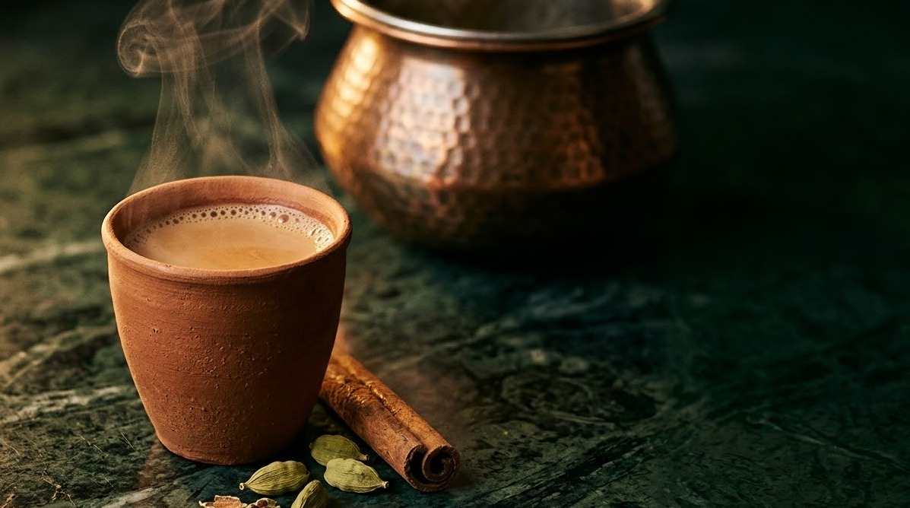
Elaichi Doodh
₹ 840100 gSecond-flush Assam, Kerala cardamom, rose
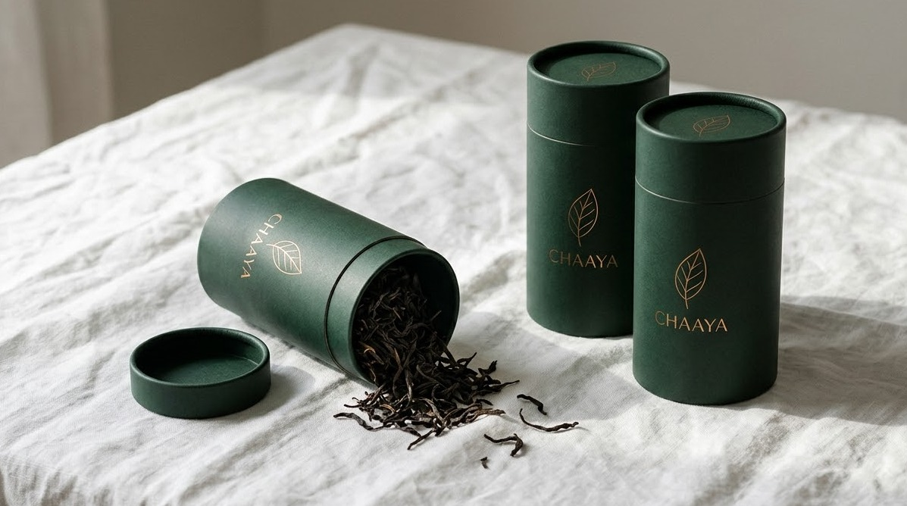
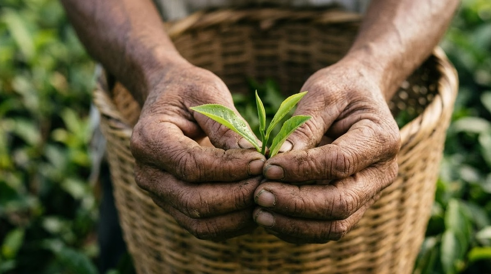
Saunth Sardi
₹ 720100 gDry ginger, tulsi, black pepper, jaggery
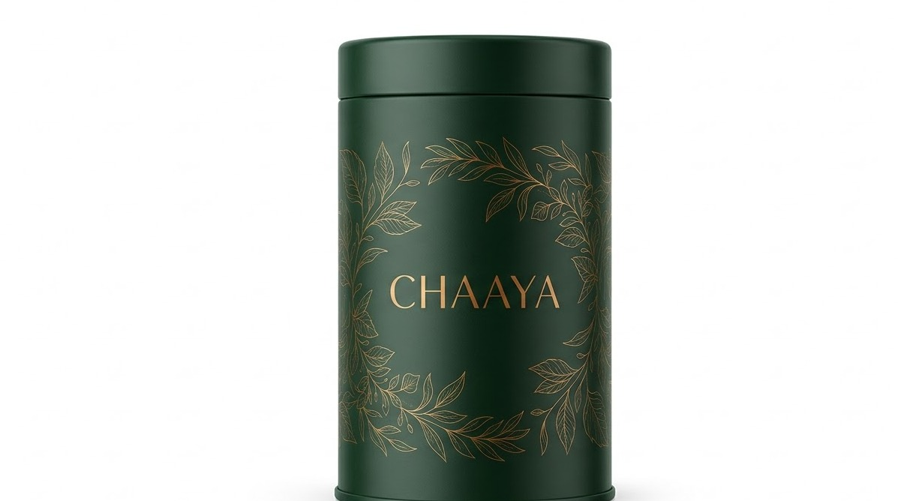
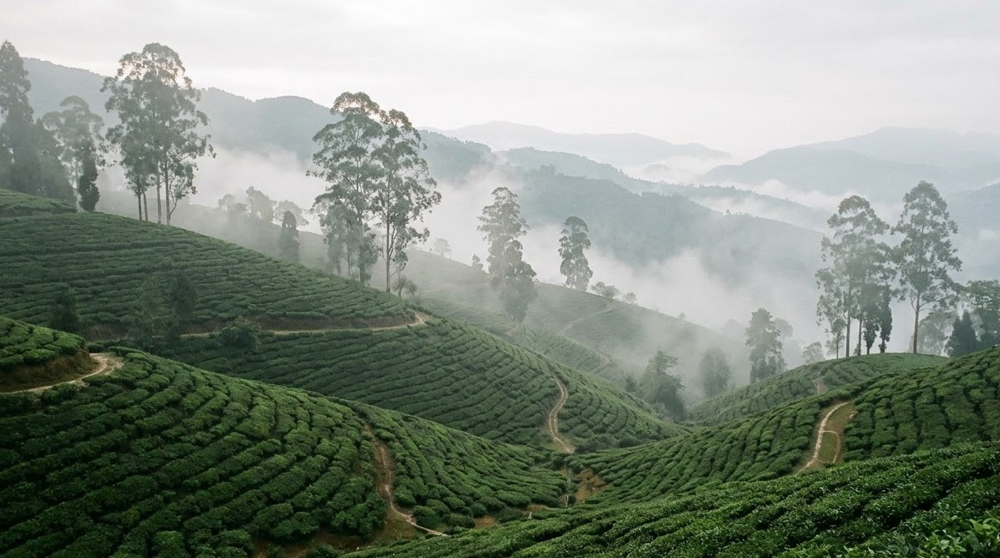
Darjeeling Dhoop
₹ 1,24050 gFirst-flush muscatel, steeped short, no milk
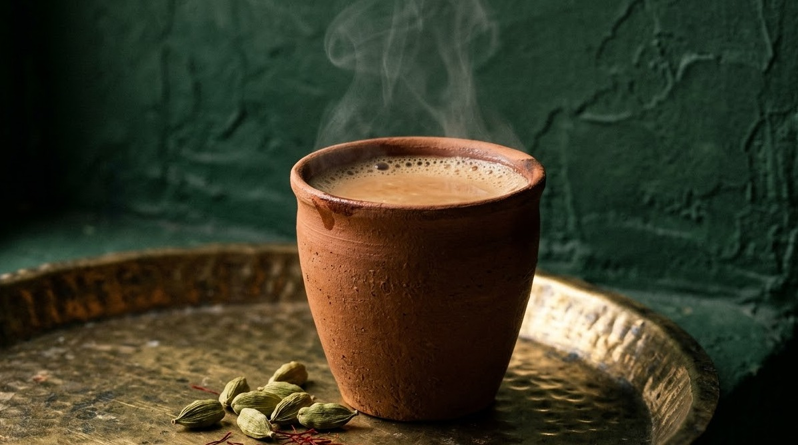
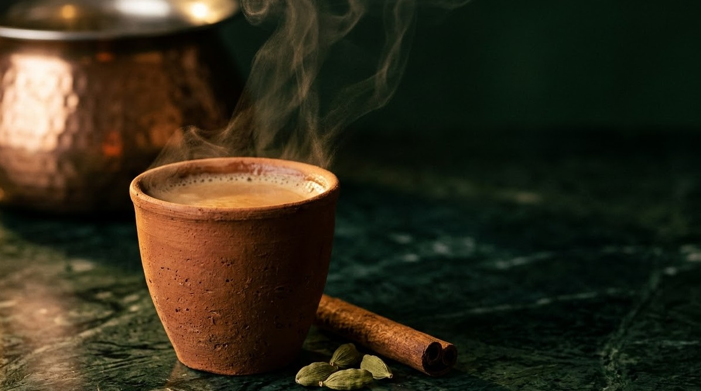
Kesar Kulhad
₹ 96050 gAssam, Kashmiri saffron, green cardamom
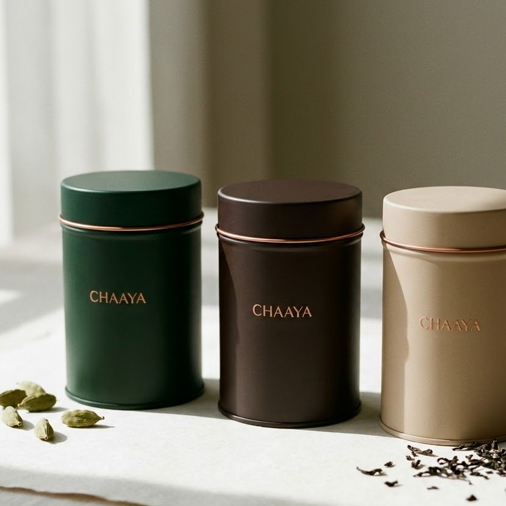
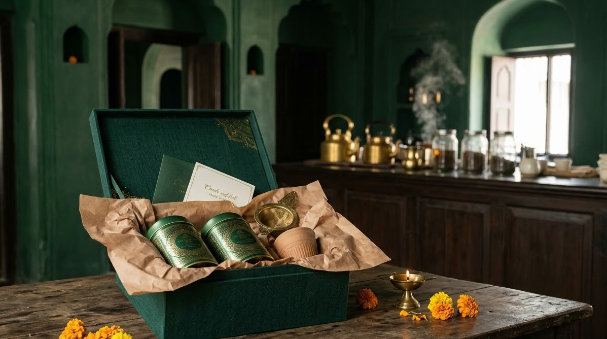
Chaaya Gift Trio
₹ 2,2003 tinsKadak, Elaichi and Saunth in a clay-lined box
Boil it until it turns kadak.
- 01Water, leaf and spiceRolling boil, 90 seconds
- 02Milk, poured from heightThe brew blooms copper
- 03Pull it twiceThrough the air, for froth
- 04Rest it in clayThe kulhad drinks a little back
Where the leaf and the clay come from
Four estates, two spice villages and one potter's family in Nizamabad. We visit every one before the harvest.
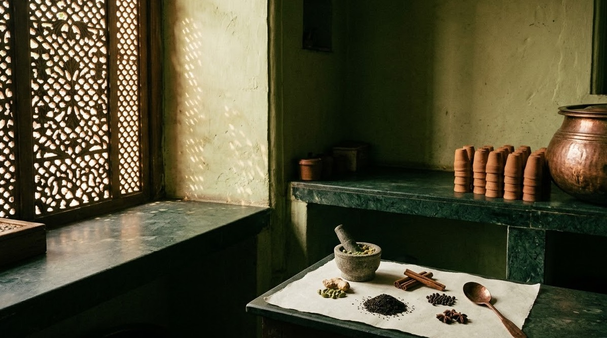